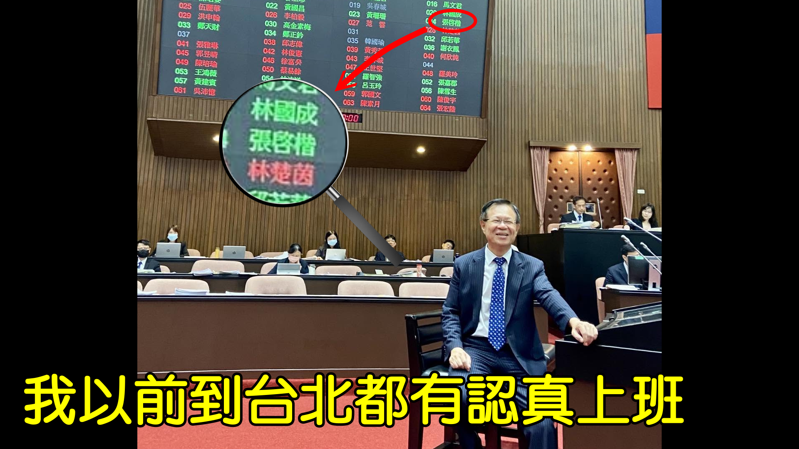
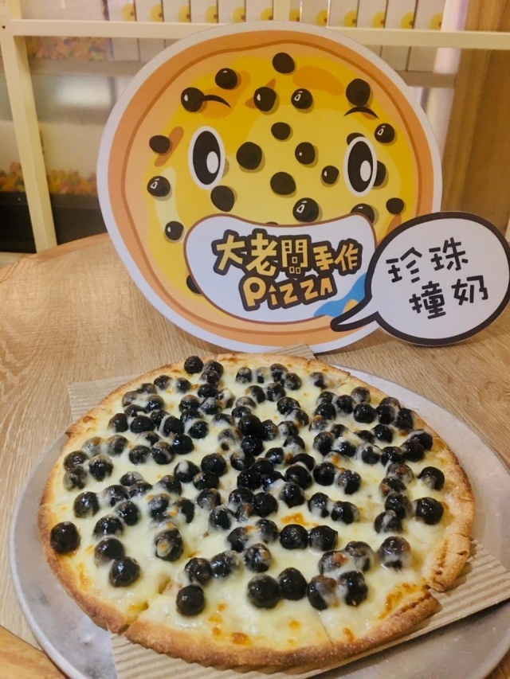
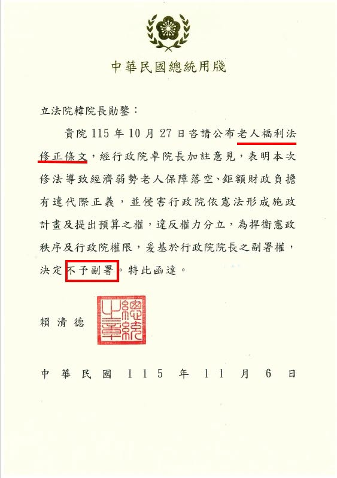
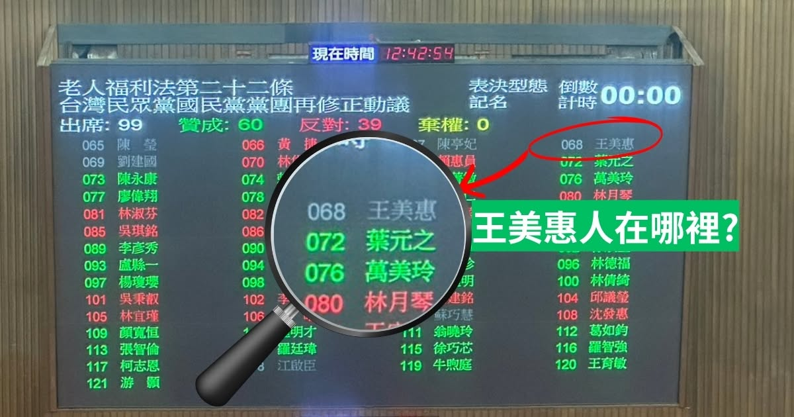
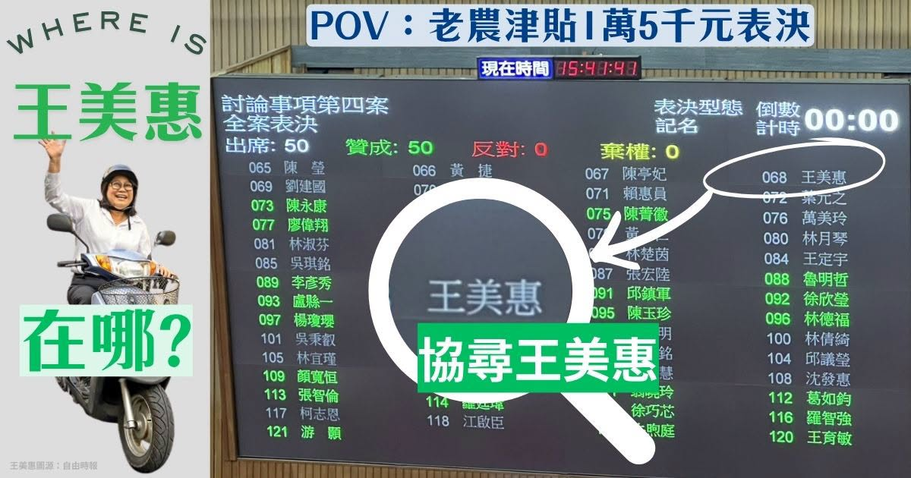
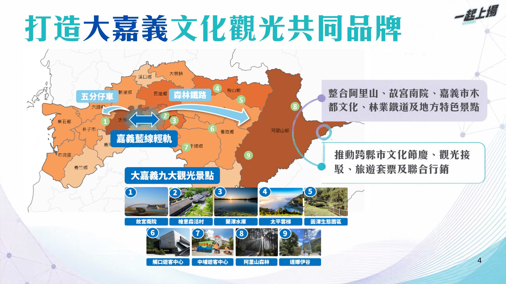

日期：本周六 | 時間：21:00 - 22:00 | 平台：YouTube

主視覺說明： 使用「我以前到台北都有認真上班」與立法院表決看板對比圖。
核心訊息： 凸顯張啓楷的出席與認真，對比對手的不作為。
| 時間 | 階段 | 主題內容 |
|---|---|---|
| 21:00 - 21:20 | 軟性開場 (20 mins) | 嘉義市創意美食(珍珠撞奶Pizza)與在地人文歷史 |
| 21:20 - 21:35 | 重砲監督 (15 mins) | 卓榮泰不副署爭議、協尋王美惠立委（為何棄權不表決？） |
| 21:35 - 21:45 | 願景政見 (10 mins) | 嘉市普發6000元、新生兒補助、可負擔宅政策 |
| 21:45 - 21:50 | 政策對決 (5 mins) | 檢視對手觀光空頭支票 vs. 啟楷輕軌具體建設 |
| 21:50 - 22:00 | 選戰動員 (10 mins) | 「11.08 藍白志工大掃街」活動宣傳與報名 |

嘉義特色創意美食：大老闆手作Pizza

輔助圖卡：卓榮泰不副署
論述重點：

輔助圖卡：老福法表決王美惠棄權

輔助圖卡：老農津貼表決王美惠棄權
攻擊火力重點 (Call to Action)：
從剛才的中央議題（老人福利、預算）拉回嘉義市，強調「中央不給的，啟楷來想辦法；對手不做的，啟楷來承擔」。
研擬嘉義市普發 6000 元。
向市民解釋財源：透過《財劃法》修法擴大財源（每年增加約77億），絕不舉債。市民的錢，就該回到市民口袋。
擴大生育補助。
除中央補助外，嘉義市加碼「生育津貼5萬，生日禮金2萬」。讓年輕人敢生、好養，住滿30天標準房型月子中心綽綽有餘！
推動青年可負擔宅。
未來都市計畫區3%蓋社宅，目標至少2000戶。結合托嬰、幼托、日照與長照，打造陪伴長輩與年輕家庭的「嘉義社福基地」。
論述重點： 戳破對手沒有配套的口號，凸顯張啓楷「輕軌」政見的務實與遠見。
質疑點：王美惠委員今天提出「串聯森林鐵路與山海觀光」的新政見，聽起來很美好，但請問「海」到底要怎麼過去？ 政策圖卡裡完全沒有提到具體的交通接駁配套，難道鄉親和遊客要用走的過去嗎？這就是標準的空頭支票！

解方：觀光不能只靠嘴巴說，要有交通建設做後盾！張啓楷具體主張建設「輕軌」，真正把市區、高鐵站甚至周邊鄉鎮的交通任督二脈打通，讓觀光客跟市民可以真正方便地「上山下海」，這才是負責任的市長候選人該提出來的具體措施！
直播呼籲重點：
「民眾的需要，啟楷都知道。請大家把直播分享出去，讓更多人看見我們為嘉義市規劃的未來！大家晚安！」